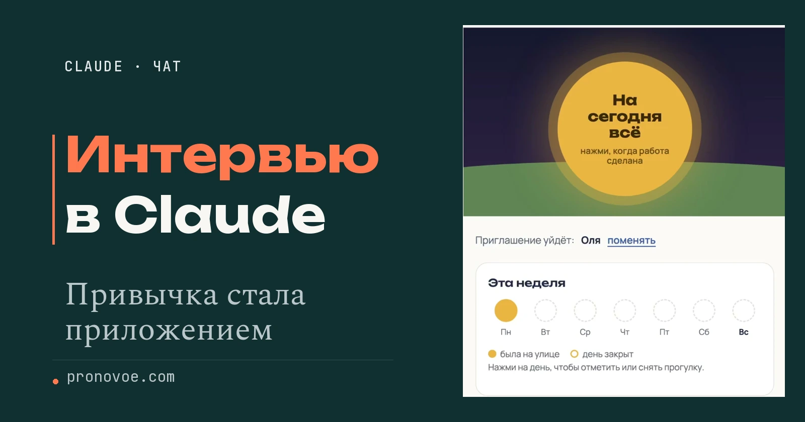
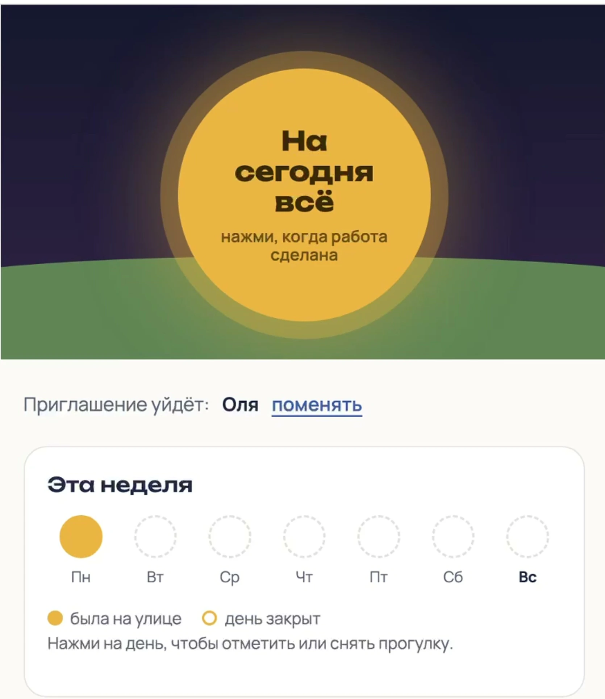
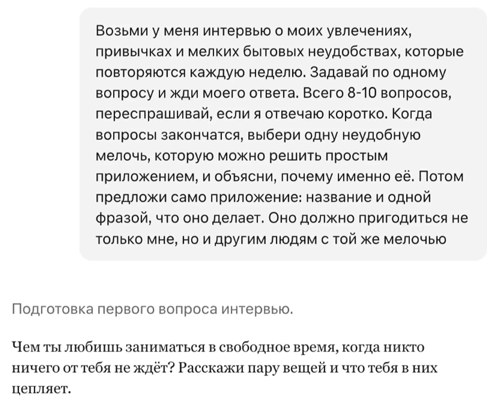
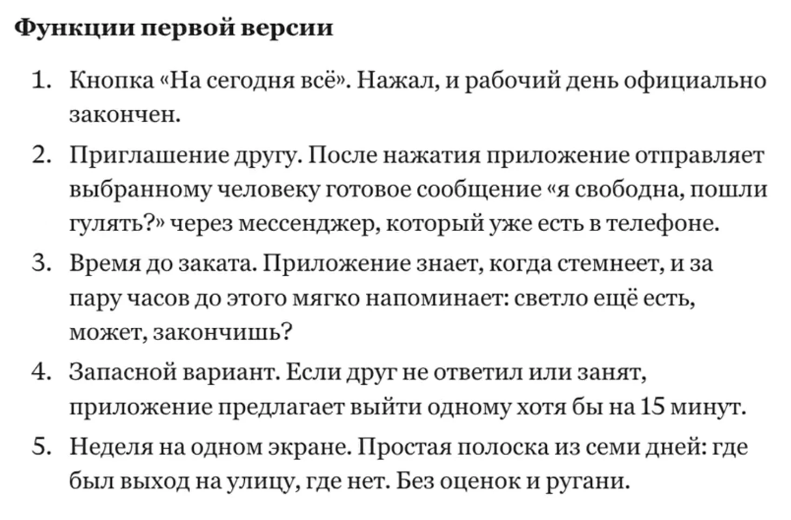
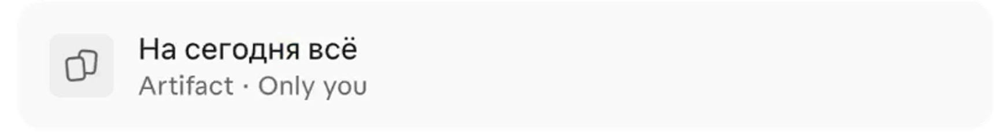
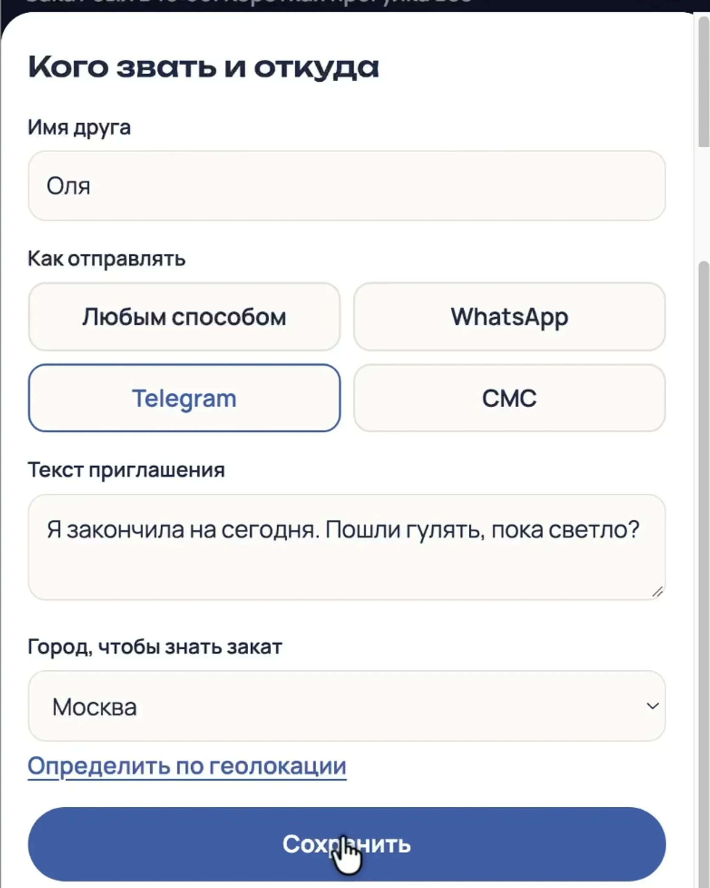
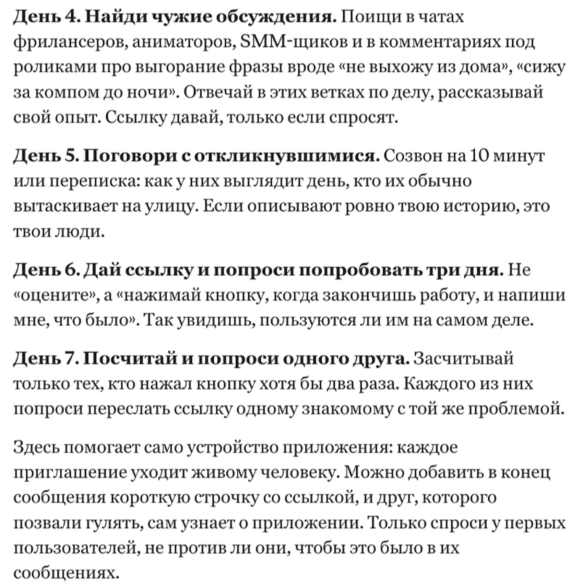
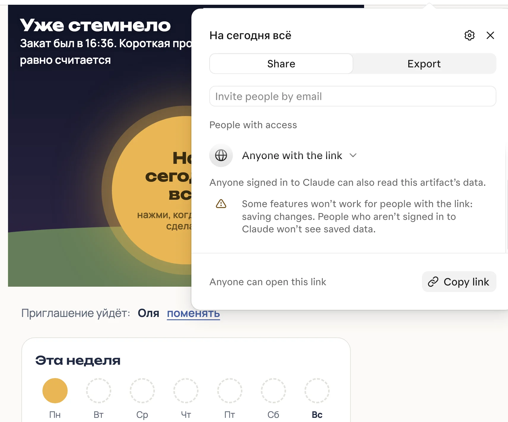
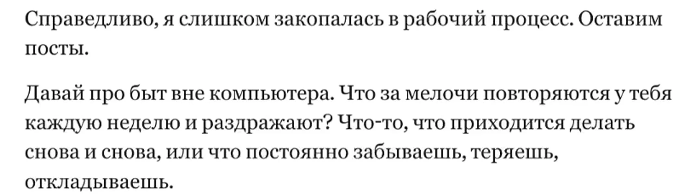

Claude
Интервью с Claude: найти идею приложения в своих привычках и собрать его без кода
Начальный уровень
Claude может расспросить тебя о привычках и мелких неудобствах, найти среди них задачу для приложения и сам собрать его без кода. Разберу на своём примере: я работаю за компьютером и не могу вовремя остановиться, а после интервью Claude собрал мне «На сегодня всё» с кнопкой, которая помогает закончить работу и выйти на улицу.

Что получишь
- Четыре готовых запроса, чтобы пройти интервью на свою тему и найти идею приложения
- План первой версии и приложение, которое можно открыть и попробовать
- Первые шаги, чтобы показать приложение людям и собрать отзывы

Содержание статьи
Что понадобится
Компьютер с браузером и аккаунт на claude.ai. На Windows и Mac открой сайт в браузере и войди в свой аккаунт. Устанавливать программу для написания кода не нужно.
Выдели 20-30 минут на разговор и первую пробу. Это ориентир для начала: если захочется подробно отвечать или переделывать приложение, времени понадобится больше.
Артефактами в Claude называют документы, сайты и приложения, которые он создаёт по твоей просьбе. В этой статье артефакт - приложение «На сегодня всё», в котором можно отмечать прогулки. Своё приложение ты сможешь открыть по карточке в чате, а позже найти в разделе Artifacts («Артефакты») в боковом меню. Создавать артефакты можно на любом тарифе, в том числе Free («Бесплатный»).
На бесплатном тарифе длинное интервью может прерваться, если закончится лимит сообщений. На Free можно собрать приложение. Чтобы открыть доступ к нему по ссылке через кнопку Share («Поделиться»), нужен платный тариф. Условия публикации разобраны ниже.
Если Claude у тебя не открывается, начни с инструкции «Claude из России».
Подготовка делается один раз: если окно с артефактом не появляется, проверь настройки по нашей инструкции с изображениями экранов. В справке нужная возможность называется Cloud code execution and file creation («Выполнение кода в облаке и создание файлов»), в обновлённом интерфейсе Create and edit files («Создание и редактирование файлов»).
Шаг 1. Пройди интервью с Claude
Открой новый чат по адресу claude.ai/new. Промпт - это сообщение с заданием для нейросети. Нажми «Скопировать» в карточке ниже, вставь его целиком в поле сообщения внизу чата и отправь.
Возьми у меня интервью о моих увлечениях, привычках и мелких бытовых неудобствах, которые повторяются каждую неделю. Задавай по одному вопросу и жди моего ответа. Всего 8-10 вопросов, переспрашивай, если я отвечаю коротко. Когда вопросы закончатся, выбери одну неудобную мелочь, которую можно решить простым приложением, и объясни, почему именно её. Потом предложи само приложение: название и одной фразой, что оно делает. Оно должно пригодиться не только мне, но и другим людям с той же мелочьюОтвечай по очереди и приводи примеры. Расскажи, в какой момент возникает проблема, что ты тогда делаешь и когда у тебя уже получалось поступить по-другому. В моём интервью Claude спросил, что было иначе в те дни, когда я всё-таки выходила гулять.

В моём разговоре сначала были мультики, посты и почти целый день за компьютером. К концу интервью появилась идея кнопки, которая помогает закончить работу и позвать подругу гулять.
Если вопросы уходят не туда, поправляй Claude сразу. Скажи ему, какую тему оставить и о чём спросить дальше.
Шаг 2. Попроси план приложения
Когда Claude предложит название и объяснит идею, отправь второй промпт в тот же чат. Он уже знает твои ответы, повторять их не нужно.
Распиши план приложения, которое ты предложил: для кого оно, что человек видит на первом экране, какие 3-5 функций нужны в первой версии, что приложение запоминает и что мы пока не делаем. Коротко, без кодаДо запроса у меня было предложение «На сегодня всё». После него появился короткий план: большая кнопка, приглашение другу, время до заката, вариант выйти одной на 15 минут и неделя с отметками.

Отдельно Claude предложил запоминать друзей, город и дни прогулок. Отказался от учёта рабочих часов, ленты и общения между пользователями, баллов и серий: иначе к ежедневным постам добавилась бы ещё одна обязанность, которую нельзя пропускать.
Шаг 3. Собери приложение в чате
Если план подходит, отправь третий промпт в тот же разговор. Слова «удобное с телефона» нужны для будущих пользователей: саму сборку ты по-прежнему делаешь на компьютере.
Теперь собери это приложение целиком как артефакт: рабочее, на русском, удобное с телефона. Если приложению нужно что-то запоминать, скажи прямо, сохранится ли это после закрытия страницыДождись окончания ответа и открой карточку приложения под ним. Вместо плана появится артефакт, который можно попробовать. Only you («Только ты») на карточке означает, что доступ другим ещё не открыт.


В моём примере на первом экране можно указать имя друга, выбрать способ отправки приглашения и ввести город для расчёта времени заката. Ниже есть кнопка «Сохранить». На главном экране солнце стало кнопкой «На сегодня всё», а под ним появились дни недели.
Прежде чем делиться, попробуй все поля и кнопки. Затем закрой вкладку, вернись в тот же чат и снова открой карточку своего приложения. Проверь, что сохранилось. Если что-то не работает, опиши в этом же чате, какую кнопку нажимаешь, что появляется и что должно произойти.
Шаг 4. Попроси план первых проб
Когда приложение можно открыть и попробовать, отправь четвёртый промпт в тот же чат. Он просит план поиска людей, а не обещает, что 20 человек найдутся за неделю.
Как найти первых 20 человек, которым эта мелочь мешает так же, как мне? Дай шаги на одну неделю, без платной рекламыДо запроса было приложение без плана, кому его показать. После него Claude расписал неделю: описать проблему, рассказать о ней, написать знакомым, найти обсуждения и дать ссылку на пробу.

Публикация и ссылка для друзей
Сначала открой карточку приложения в чате. Кнопку Share («Поделиться») ищи в самом приложении. Кнопка с таким же названием в верхней панели чата позволяет поделиться перепиской. Надпись Only you означает «Только ты»: другим приложение пока не открыто.
Если у артефакта кнопка Share («Поделиться»)
Нажми её, в разделе People with access («Люди с доступом») выбери Anyone with the link («Любой, у кого есть ссылка») и нажми Copy link («Скопировать ссылку»). В новом интерфейсе эта возможность есть на Pro, Max и Ultra; для Team и Enterprise доступ для людей вне организации зависит от её настроек.

Если у артефакта кнопка Publish («Опубликовать»)
Такая кнопка бывает только у артефактов, созданных до 16 сентября 2026 года, создать новый в таком формате уже нельзя. Публикация через Publish работает и на Free, обычные функции по такой ссылке открываются без аккаунта Claude.
Большинство новых артефактов по ссылке тоже открываются без входа, но есть исключения: документы, сохранённые данные и функции Claude могут потребовать аккаунт. Перед отправкой проверь ссылку без входа в Claude: в Chrome на Windows открой приватное окно браузера через Ctrl+Shift+N, на Mac через Cmd+Shift+N, затем вставь ссылку в адресную строку.
Подробные изображения кнопок есть в нашей инструкции про артефакты.
У старого артефакта кнопка Unpublish («Снять с публикации») закрывает доступ по ссылке, но после этого тот же артефакт заново не опубликовать. Понадобится создать новый.
Мой пример: «На сегодня всё»
Я начала разговор без идеи приложения. Сначала рассказала, что люблю делать мультики и каждый день выпускаю посты. И что не могу отойти от компьютера: всё время откладываю перерыв и в итоге сижу за работой до темноты.
Когда интервью пошло не туда
Claude стал спрашивать, как делаются посты и что в процессе занимает время. Я остановила его: «По-моему, ты лезешь не туда».
В ответ он признал: «Справедливо, я слишком закопалась в рабочий процесс. Оставим посты». Дальше разговор перешёл к жизни вне компьютера.

Что оказалось главным
Я всё-таки выхожу, когда вижу готовый результат или когда звонит подруга и зовёт гулять. На этом Claude и остановился: «у твоего рабочего дня нет финала», поэтому момент «можно встать» не наступает сам.
Он предложил заканчивать рабочий день нажатием кнопки: нажимаешь «На сегодня всё», когда работа сделана, и зовёшь друга гулять, пока светло. Такое может пригодиться фрилансерам, блогерам и другим людям, которые работают на себя.
Демонстрационный пример «На сегодня всё»
Claude собрал эту демоверсию, чтобы показать, как идея из интервью превращается в приложение. На главном экране есть кнопка для завершения рабочего дня и отметки прогулок.
Чего приложение пока не умеет
Подсказка о закате работает только при открытой странице. Эта версия не присылает уведомления, когда страница закрыта.
Выбор WhatsApp, Telegram, СМС и меню «Поделиться» есть в настройках. Перед тем как показать приложение другим, отправь пробное приглашение и спроси у друга, дошло ли оно.
Что будет с введёнными данными
Справка Claude подтверждает сохранение данных между посещениями на Pro, Max, Ultra, Team и Enterprise в браузере и приложении для компьютера.
На Free такое сохранение не обещается.
В нашем прогоне Claude ответил, что настройки и отметки сохранятся в аккаунте, а без связи с ним останутся в браузере. Чтобы узнать, что сохраняется в твоём приложении, введи пробные данные, закрой его и открой снова.
Тот, кто открыл приложение по ссылке и вошёл в Claude, может прочитать сохранённые данные, но сохранить свои изменения не сможет. Кто не вошёл в Claude, сохранённых данных не увидит.
Перед пробой спроси Claude, какие данные увидит только один пользователь, а какие будут видны всем, у кого есть доступ. Для первого теста достаточно вымышленного имени друга: контакты и личную переписку добавлять не нужно.
Неделя до первых отзывов
Вот сжатый план из ответа Claude.
День 1. Опиши, что тебя задевает
Одна фраза про жизнь: «работаю из дома, весь день за компьютером и не могу себя отпустить на улицу».
День 2. Расскажи у себя
Опиши эту ситуацию в посте и спроси, у кого так же. Запиши тех, кто откликнулся.
День 3. Напиши знакомым лично
Выбери 10-15 знакомых, которые работают на себя. Claude советует личные сообщения вместо одного общего объявления.
День 4. Найди обсуждения о работе допоздна
Поищи разговоры фрилансеров и авторов о работе до ночи. Отвечай по делу; ссылку давай, если просят.
День 5. Поговори с людьми
Узнай в переписке или коротком разговоре, как они заканчивают день и что помогает выйти из дома.
День 6. Дай попробовать
Предложи открыть приложение на три дня. Попроси пользоваться им после работы и рассказать, что произошло.
День 7. Подведи итоги первых проб
Спроси участников, сколько раз они нажали кнопку «На сегодня всё», и посчитай тех, кто нажал её хотя бы дважды. Попроси каждого из них переслать ссылку на приложение одному знакомому, которому тоже трудно закончить работу и выйти на прогулку. Если кто-то пробует приложение меньше трёх дней, вернись к подсчёту позже.
Мелочи, которые помогают интервью
Отвечай подробно: вместо «работаю много» опиши, на что уходит день и в какие моменты всё-таки получается отвлечься. Именно эти два случая помогли Claude найти идею в моём разговоре.
Поправляй вопросы, если они не про твою проблему. Проси переделать одну вещь за раз и проверяй результат: наличие кнопки ещё не доказывает, что сообщение дошло или данные сохранились.
Частые вопросы
Нужен ли платный тариф?
На Free можно пройти интервью и собрать приложение. Для доступа по ссылке через Share нужен платный тариф. Старые артефакты с кнопкой Publish можно опубликовать и на Free. Подробнее в разделе про публикацию. На Free длинный разговор может прерваться из-за лимита.
Нужно ли уметь программировать?
Для этих четырёх запросов нет: ты описываешь жизнь, читаешь план и пробуешь результат. Ошибки и ограничения всё равно нужно проверять, а исправления можно просить в том же чате.
Увидит ли друг приложение без аккаунта?
Артефакты, опубликованные через Publish, открываются без регистрации. Большинство артефактов по ссылке Share тоже открывается без входа, но для некоторых функций нужен аккаунт. Подробнее выше. Ссылка на демоверсию есть в разделе «Демонстрационный пример».
Сохранятся ли данные после закрытия?
Это зависит от тарифа и того, как собрано приложение. Возможность сохранения есть на платных тарифах, но работу конкретной версии надо проверить: что известно про наш пример.
Можно ли на английском или на другую тему?
Можно попросить Claude провести интервью на другую тему или на другом языке. В третьем промпте замени «на русском» на нужный язык и проверь получившиеся подписи; наш записанный пример выполнен по-русски.
Источники
Проверено 8 ноября 2026 года.
- Claude Help Center: Share artifacts - новый и старый способы доступа, тарифы и отмена публикации
- Claude Help Center: What are artifacts and how do I use them? - создание, настройки и сохранение данных
- Мой разговор и запись пробы «На сегодня всё» от 8 ноября 2026 года - вопросы, план, экраны и план поиска первых пользователей
Приложение уже можно открыть в чате. Дальше пригодится умение объяснять Claude задачу, просить изменения и проверять результат на каждом шаге. Ниже - обучение работе с нейросетями без знания кода.
Что можно делать с нейросетями, если не знаешь кода?
Чтобы почувствовать размах, посмотри Концентрат Ивана Сергеева. ИИ-агенты на твоих глазах собирают продукт, контент, сайты и воронки без кода. Это основа под любую цель: свои услуги, партнёрка, чужой бизнес. Три дня бесплатно, VIP с четвёртым днём - 990 ₽
Забрать КонцентратУже знаешь, чего хочешь? Тогда в мастер-группу Ивана: система продаж на ИИ без продюсера и технаря, сопровождение и сообщество
Заполнить анкету предзаписиНабор открывается редко, кто записался заранее, получает лучшую цену и бонусы. Платить сейчас не нужно
Реклама. ИП Сергеев И. С., ИНН 352511695540. erid: 2Vtzqvk2p6q